01
AI-kledingherkenning
Upload een foto van een kledingstuk en ontvang binnen seconden visueel vergelijkbare duurzame alternatieven.
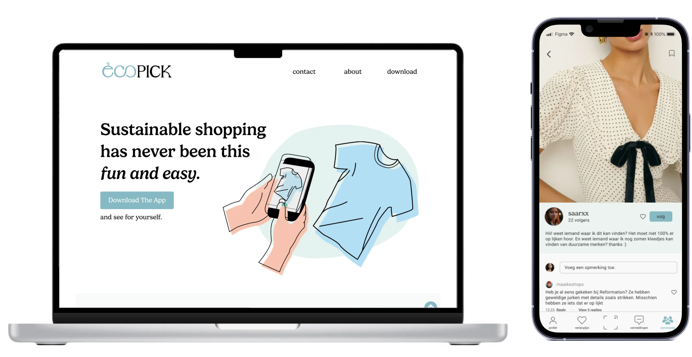
Ecopick
Duurzame mode wordt steeds belangrijker voor consumenten, maar veel mensen hebben moeite om kleding te vinden die past bij zowel hun stijl als hun waarden. EcoPick werd ontwikkeld als concept om deze kloof te overbruggen door AI-beeldherkenning te gebruiken om kledingitems te herkennen en direct duurzame alternatieven te suggereren van ethische merken en tweedehandsplatforms.
Consumenten willen vaak duurzamere kledingkeuzes maken, maar hebben moeite met het vinden van betaalbare en stijlvolle alternatieven die bij hun voorkeuren passen. Daarom kopen veel mensen nog steeds bij fast-fashion merken, ondanks hun zorgen over het milieu. Bestaande oplossingen vereisen veel zoeken en missen personalisatie, waardoor duurzaam shoppen onpraktisch en onbereikbaar voelt.
Users didn't need more information about sustainability. They needed a faster way to discover sustainable alternatives that matched products they already wanted to buy.
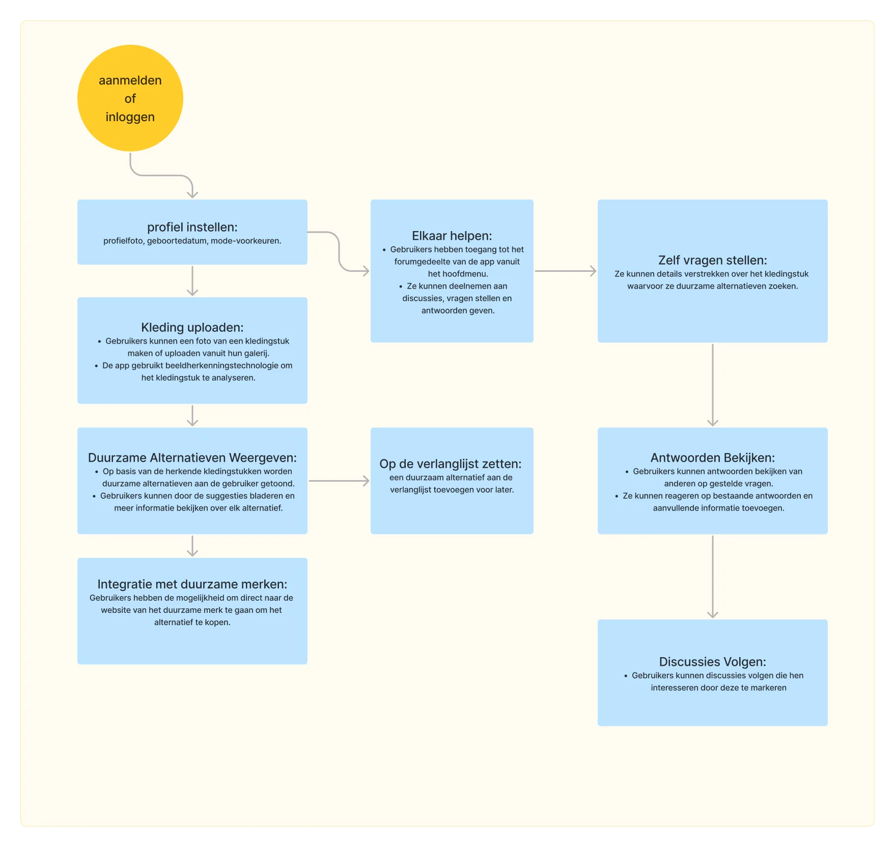
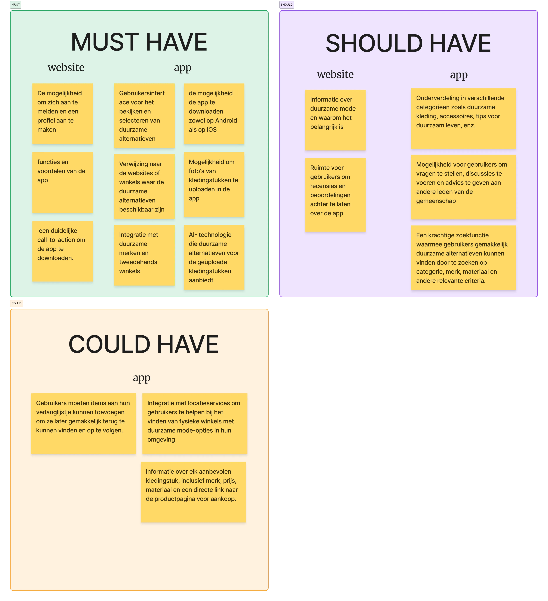
Op basis van de onderzoeksinzichten werd het concept opgebouwd rond drie principes:
Duurzaam shoppen zou net zo eenvoudig moeten voelen als traditioneel online shoppen. Het doel was de frustratie weg te nemen door handmatig zoeken te vervangen door een eenvoudig workflow op basis van afbeeldingen.
Door te focussen op vertrouwdheid in plaats van educatie, verlaagt het platform de drempel om duurzamere aankoopbeslissingen te nemen.
Upload een foto van een kledingstuk en ontvang binnen seconden visueel vergelijkbare duurzame alternatieven.
Suggesties worden afgestemd op de stijl van de gebruiker, waardoor duurzaam shoppen relevanter en toegankelijker wordt.
Ontdek producten van ethische merken en tweedehandsplatforms via één interface.
Gebruikers kunnen suggesties delen, advies vragen en elkaar helpen duurzame mode-opties te ontdekken.
De wireframes richtten zich op het vereenvoudigen van de ervaring in een paar duidelijke stappen: een afbeelding uploaden, AI-gegenereerde matches bekijken, filters toepassen en duurzame alternatieven verkennen.
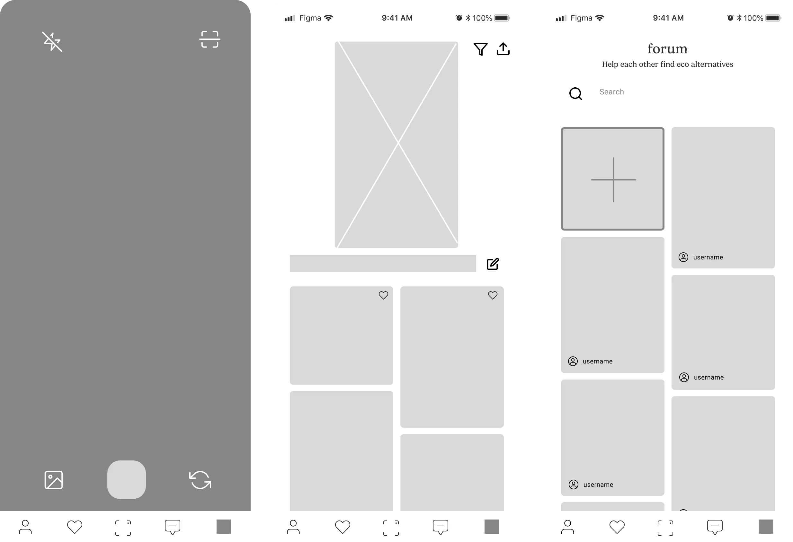
De visuele identiteit combineert schone interfaces met natuurlijke kleuren geïnspireerd door duurzaamheid, mode en bewuste consumptie.
Het ontwerp benadrukt productbeelden en ontdekking, terwijl het een moderne en toegankelijke uitstraling behoudt.
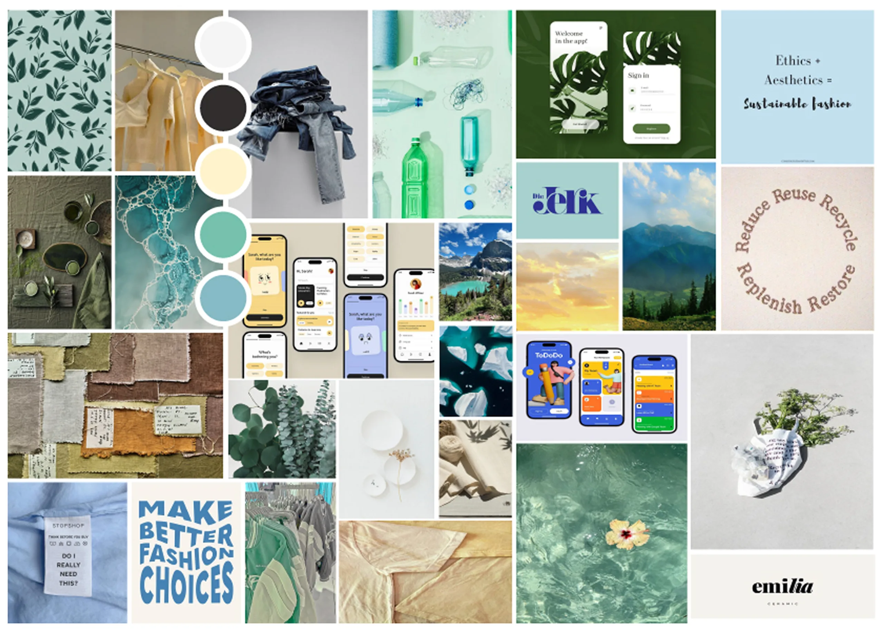
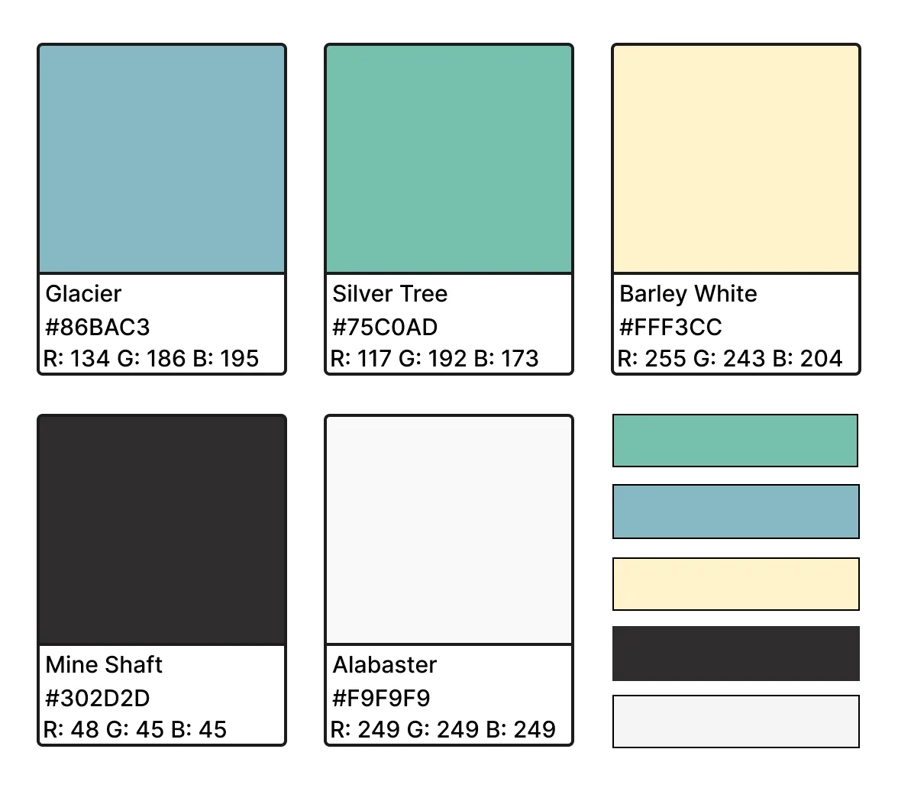
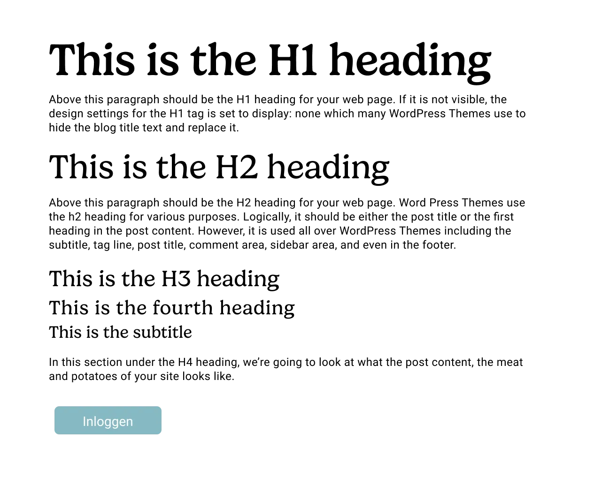
Het uiteindelijke concept zet het ontdekken van duurzame mode om in een eenvoudige en intuïtieve ervaring. Door AI-beeldherkenning, gepersonaliseerde suggesties en door de community aangedreven inzichten te combineren, helpt EcoPick mensen de kloof te overbruggen tussen het willen kopen van duurzame kleding en dit daadwerkelijk doen.
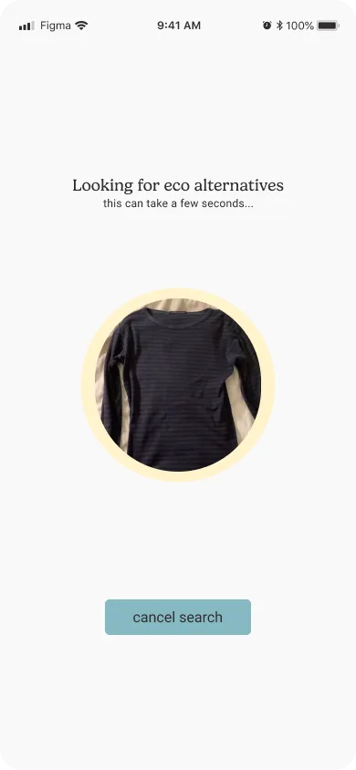
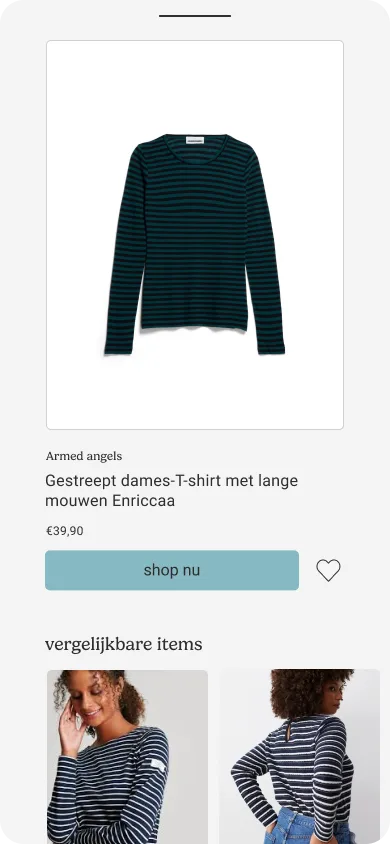
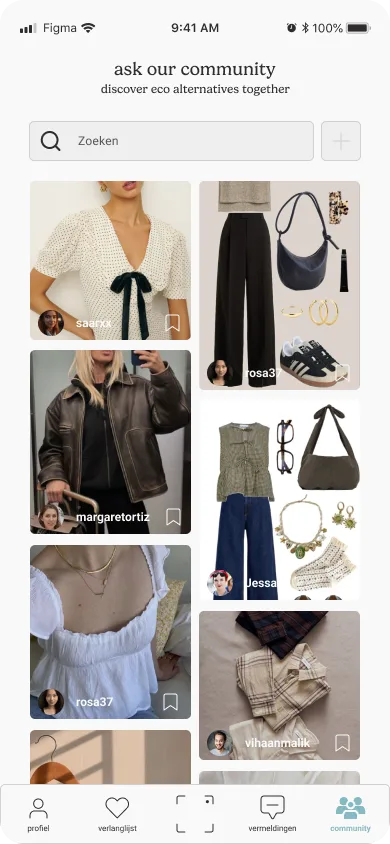
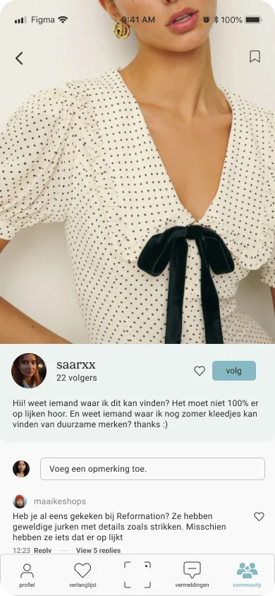
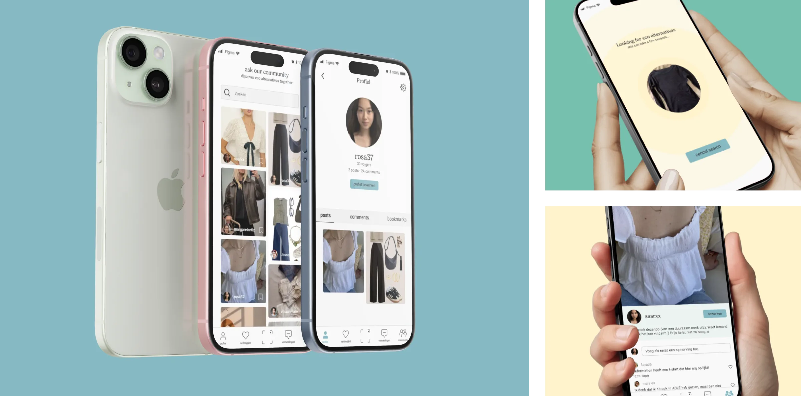